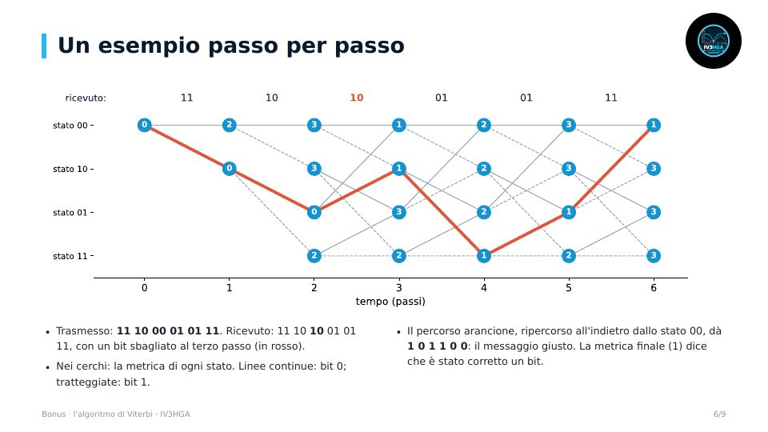

Bonus · Modulo 1
Bonus: l'algoritmo di Viterbi
- Codifica convoluzionale e stati
- Il traliccio e la distanza di Hamming
- Add-compare-select ed esempio passo per passo con un errore corretto
- Decisioni morbide e dove si usa
Come un ricevitore ricostruisce i bit giusti anche quando ne arrivano di sbagliati, spiegato in modo semplice con un esempio passo per passo.
